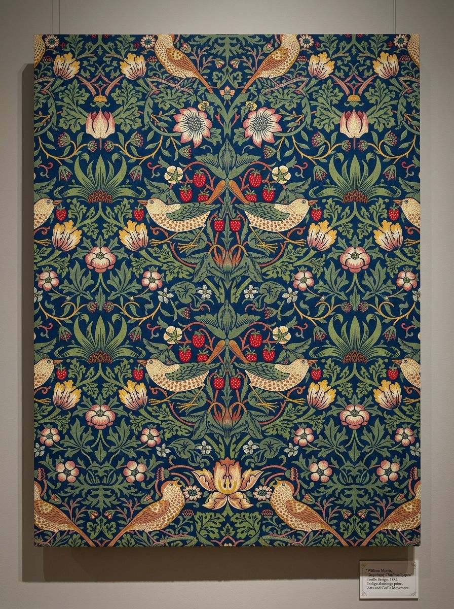

יחידות / 05
יחידה 05
תרבות וסמלים כמקור השראה
סמל · מסורת · מורשת

כל תרבות יוצרת סמלים חזותיים. התלמידים בודקים כיצד סמלים תרבותיים פועלים, משתנים לאורך הזמן ויכולים להיות חומר אמנותי עוצמתי.
6 שיעורים + פרויקט מסכם
- השראה
- התבוננות
- רעיון
- יצירה
מקורות השראה ורקע על האמנים
אמנים ביחידה
- פרידה קאלושיעור 5.3
- דייגו ריברהשיעור 5.3
- בנקסישיעור 5.5
- אנדי וורהולשיעור 5.5
- קהינדה ויילי
גישות
- סמליות
- לימוד חפץ
- איקונוגרפיה
- בין-תרבותי
השיעורים
-
5.1
מהו סמל?
סימנים, סמלים ואיקונים, כיצד תרבות חזותית מתקשרת מעבר לשונות
על השיעור
מבוא לסמלים חזותיים, כיצד הם פועלים, כיצד הם משנים משמעות לפי הקשר, וכיצד אמנים משתמשים בהם בכוונה.
45 דקות בפיתוח -
5.2
מהירוגליפים מצריים עד אימוג'י
4,000 שנות של תקשורת חזותית, מה משתנה?
על השיעור
התלמידים עוקבים אחר התפתחות התקשורת החזותית מהירוגליפים ועד אימוג'י עכשווי, ובודקים מדוע סמלים מתמידים, משתנים או נעלמים.
50 דקות בפיתוח -
5.3
פרידה קאלו והסמליות המקסיקנית
כיצד סמלים לאומיים הופכים לשפה חזותית אישית
על השיעור
עבודתה של קאלו עשירה בסמלים תרבותיים מקסיקניים. התלמידים מפענחים את האיקונוגרפיה שלה ויוצרים דיוקן עצמי הכולל סמלים מתרבותם שלהם.
55 דקות בפיתוח -
5.4
דפוס כזהות תרבותית
בד קנטה, גיאומטריה איסלמית, טא מוקו מאורי, דפוס שמדבר
על השיעור
דפוס הוא אחד השפות האמנותיים הוותיקות בעולם. התלמידים לומדים שלושה מסורות דפוס ויוצרים דפוס מקורי הכולל אלמנטים מזהותם התרבותית שלהם.
55 דקות בפיתוח -
5.5
בנקסי וסמלים הפוכים
כשאיקונים מוכרים נחטפים כדי לומר משהו חדש
על השיעור
מה קורה כשלוקחים סמל רווי תרבותית ומשנים את משמעותו? התלמידים יוצרים עבודה ההופכת איקון תרבותי קיים או מציבה אותו בהקשר חדש.
50 דקות בפיתוח -
5.6
✦ המפה התרבותי שלי פרויקט מסכםפרויקט מסכם
פרויקט מסכם של היחידה, מפה חזותי אישי של סמלים ומשמעויות תרבותיים
על השיעור
התלמידים יוצרים מפה תרבותית חזותית מקורי, חלקית יצירת אמנות, חלקית הצהרה אישית, המשרטט את הסמלים, הצבעים, הדפוסים והאיקונים המרכיבים את זהותם התרבותית.
60+ דקות בפיתוח